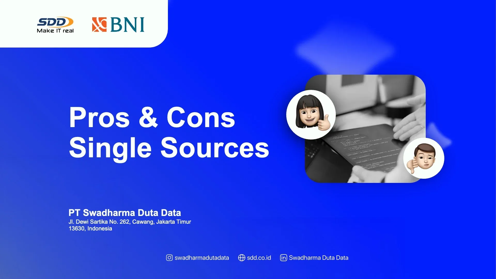
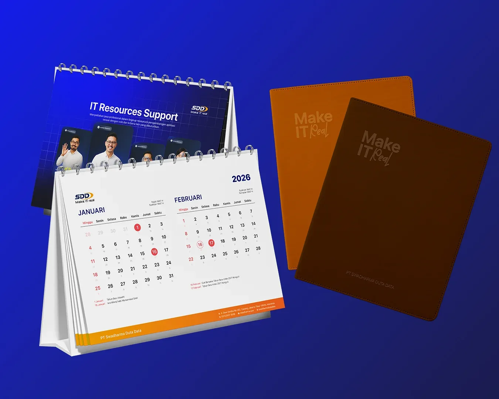
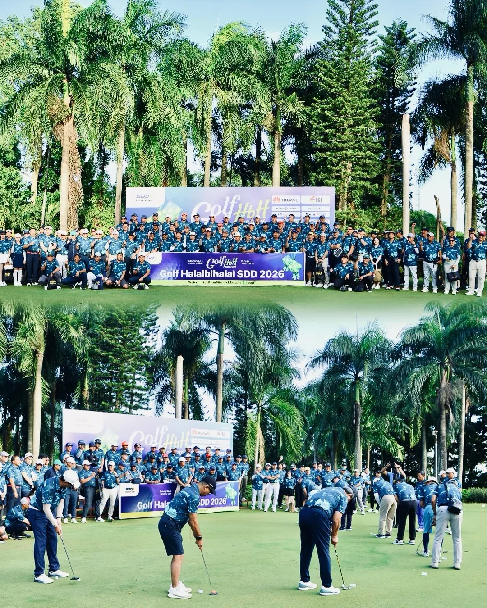
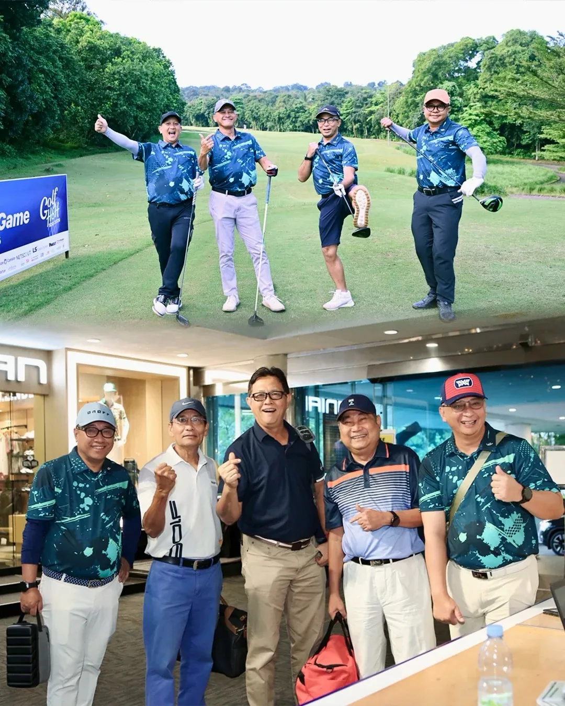
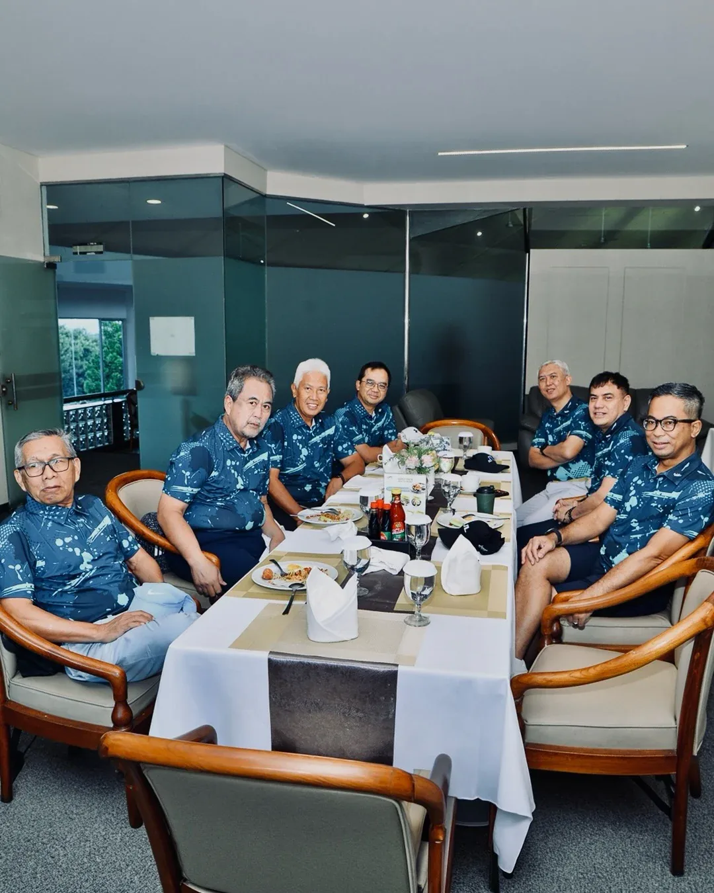
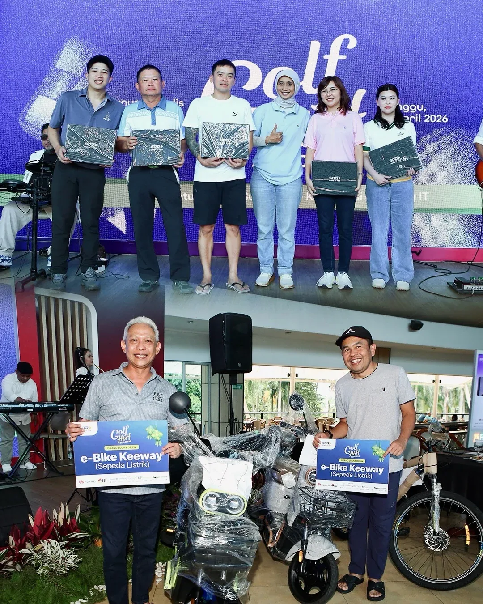
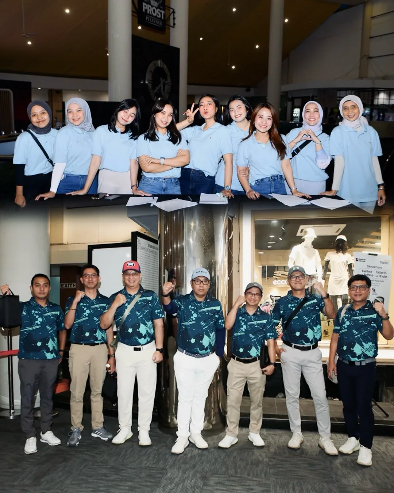

Component study / actions
Navigation & Actions · 2026
Buttons, navigation & action states
Primary, secondary, destructive, disabled, loading, and status-aware actions should behave consistently across the product.
A selection of interface-system thinking from my product work—reusable components, states, layouts, messages, and patterns designed to keep large products consistent.
Showing selected interface-system patterns.
Primary, secondary, destructive, disabled, loading, and status-aware actions should behave consistently across the product.

Labels, validation, helper text, selection controls, and error feedback use repeatable patterns so forms feel predictable.

Dense data is organized through clear hierarchy, visible status, summaries, filters, and actions that match the current state.
Reusable components adapt across desktop and mobile without changing the meaning, action priority, or interaction logic.
Empty states explain what is missing and provide a useful next step instead of leaving blank space.
Status-specific states communicate what is happening, why an action is unavailable, and how the user can continue.
Confirmation patterns distinguish reversible actions from high-risk actions and make completion visible.




